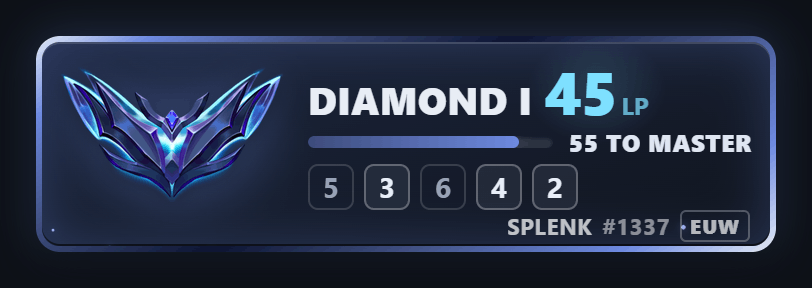
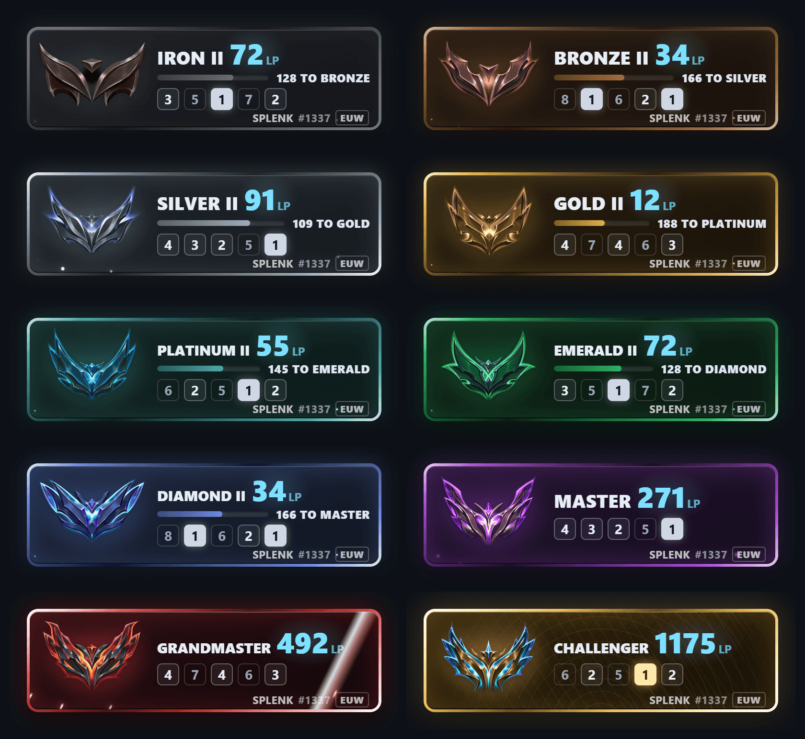

Dark canvas — #0d1117

overlay-live.gif @ width=406 (2x capture)
overlay-moment.gif @ width=450 (1x, native)

overlay-tiers.png @ width=820
Light canvas — #ffffff
overlay-live.gif @ width=406 (2x capture)
overlay-moment.gif @ width=450 (1x, native)
overlay-tiers.png @ width=820